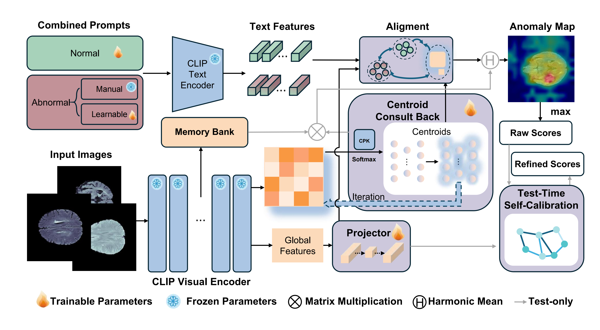
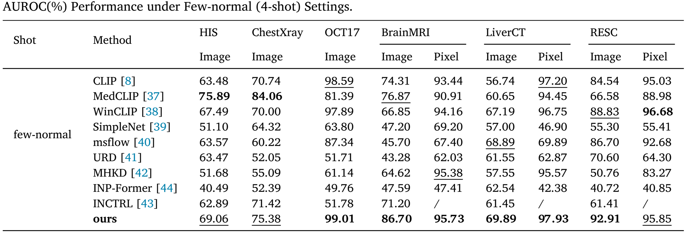
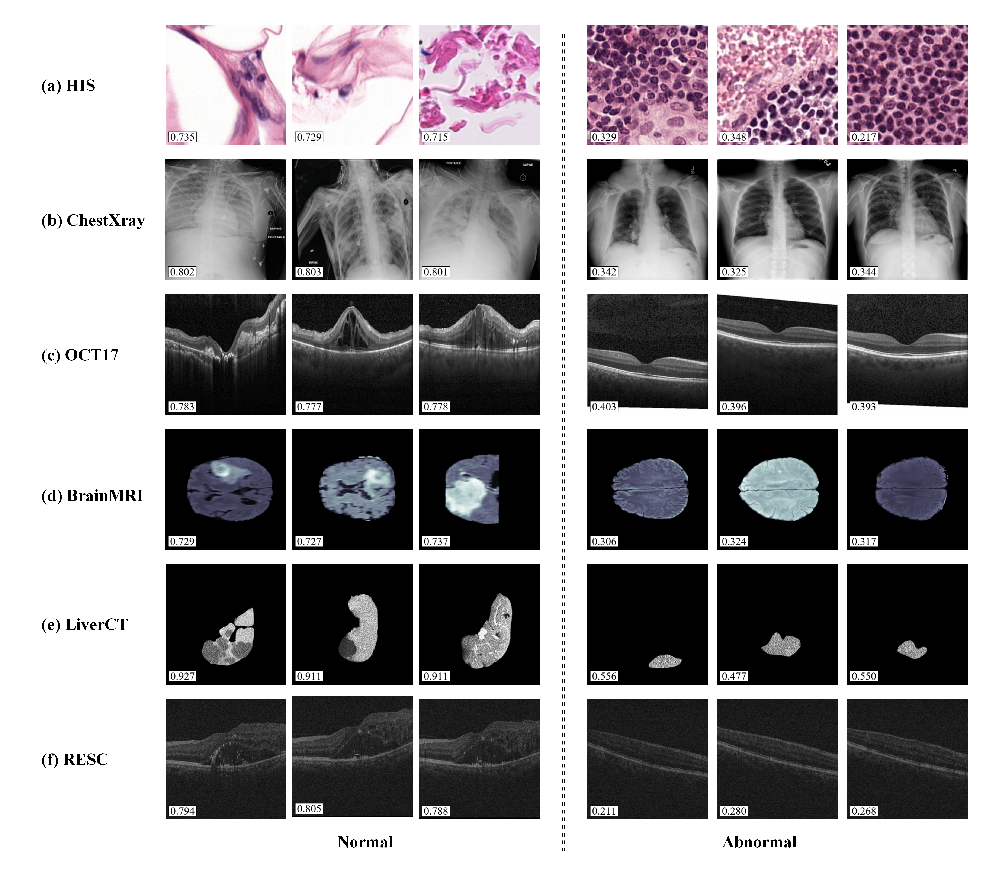

Accurate detection of anomalies in medical images is of paramount importance for the early diagnosis and effective treatment of diseases. However, this task is often impeded by the scarcity of labeled data, especially in specialized medical domains, which necessitates the development of few-shot learning methods that can generalize well from limited examples. Despite recent advances, existing few-shot anomaly detection methods still face difficulty in distinguishing subtle pathological features from background noise due to limited data which leads to high background false positives. Moreover, the anomaly scores may be disproportionately influenced by localized prominent noise or artifacts, rather than accurately reflecting the true extent of abnormalities across the entire image, resulting in unreliable detection results.
To address these challenges, we propose a novel few-shot medical image anomaly detection framework that incorporates two innovative Plug-and-Play modules: the Centroid Consultation Back (CCB) module, which enhances local anomaly features through dynamic clustering and global context backpropagation to effectively reduce background false positives while improbing the sensitivity to subtle anomalies; and the Test-Time Self-Calibration (TSC) module, which optimizes anomaly scores in a fully unsupervised manner at test time to mitigate the influence of localized prominent noise or artifacts, ensuring that the anomaly scores accurately reflect the true extent of abnormalities across the entire image without additional training.
Evaluated on medical image datasets of multiple modalities, our framework achieves state-of-the-art performance, with an average AUROC of 82.16% on anomaly classification and 96.50% on anomaly localization, providing a robust and reliable solution for clinical anomaly detection.

For textual prompts, we combine manual and learnable text as abnormal prompts, and only learnable for normal. The prompts are encoded by the CLIP text encoder.
For images, CLIP-encoder extracts global CLS features and local patch features simultaneously from few-shot input images. Subsquently, the CCB module uses dynamic clustering and central self-attention to perform global context feedback, enhancing local anomaly representation and suppressing background artifacts.
During test phase, the TSC module constructs a sparse similarity map between samples and iteratively optimizes the anomaly score using PageRank to mitigate the influence of local noise.
The anomaly map computation branch fuses global and local features and compares them with textual hint features to directly optimize the segmentation mask and indirectly improve localization accuracy.

In the table, the bolded items represent the SOTA methods, and the underlined ones are suboptimal. Our method achieved 6 out of 9 tasks including anomaly classification (Image) and location (Pixel) with state-of-the-art performance and ranked second in other 3 of them.
We present qualitative comparisons of anomaly localization maps and classification heatmaps. The results are arranged from left to right as: input image, predictions from state-of-the-art methods including CFLOW-AD, DiAD, msflow, and URD, our method, and ground truth annotations. CFR-Net produces more compact and spatially precise anomaly responses, especially around lesion regions and layer-wise abnormal structures.
Examples of localization maps and classification heatmaps across different medical datasets.

Examples of classification scores of normal samples and abnormal samples. The predicted scores by our method are shown with each sample. The higher the score, the more likely to be an anomaly.
Many excellent works have collectively contributed to our work.
@article{NIE2026113261,
title = {Few-shot Medical Anomaly Detection through Centroid Consultation Back and Test-Time Self-Calibration},
journal = {Pattern Recognition},
pages = {113261},
year = {2026},
issn = {0031-3203},
doi = {https://doi.org/10.1016/j.patcog.2026.113261},
url = {https://www.sciencedirect.com/science/article/pii/S0031320326002268},
author = {Zihan Nie and Muhao Xu and Yuan Cui and Hua Wei and Wei Yi and Sijie Niu and Yi Wan and Xunbin Wei and Weiye Song},
keywords = {Anomaly Detection, Medical Image Analysis, Few-shot Learning},
}